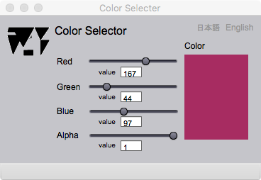

Color selector
Introduction
This page is to design a color using additive color system. The color is defined by selections of primitive RGB color values (0 - 255) and alpha value (0 - 100) for transparency. Please refer the books introduced in the text in Cartographer page to learn how to plan color combination for your purpose.
Color selector

Figure 1. Page for selection of color
FIELDS
value (Red) (editable)
Key-in the red color value (0 - 255) to indicate brightness.
value (Green) (editable)
Key-in the green color value (0 - 255).
value (Blue) (editable)
Key-in the blue color value (0 - 255).
value (Alpha) (editable)
Key-in the alpha value (0 -100) to indicate transparency. Smaller value means more transparent.
Color
A sample color is displayed here.
BUTTONS
Red
The slider is used to indicate a color value.
Green
The slider is used to indicate a color value.
Blue
The slider is used to indicate a color value.
Alpha
The slider is used to indicate a transparency.
日本語
今あなたが読んでいるドキュメントが表示されます．
English
You can read the tutorial written in English.